15주차 — System-2 테스트 및 검증 (종합 프로젝트)¶
학습목표
한 학기 동안 구축한 Spot+ATS 보안 로봇의 두뇌(System-2, LLM 플래너)와 몸(System-1, 로봇 제어)을 연결하여, 자연어 명령이 계획 생성 → 실행 → 현장 대응으로 이어지는 전체 파이프라인을 시뮬레이션에서 검증하고, 최신 Physical AI(VLA) 관점에서 고도화 방향을 논의한다.
출처 (Sources)
본 주차의 그림과 예제는 강의 교안 『Physical AI』 5강 「System-2 테스트 및 검증」, 4강 「System-2 LLM Planner 설계」(제작: ENGI UNIVERSE)와 Spot+ATS 프로젝트 사용 매뉴얼(Rev 1.4) 을 바탕으로 재구성하였습니다. 코드는 교안의 설명을 충실히 따른 재구성 예제입니다(원본 소스 비공개).
⏱️ 3시간 구성¶
| 교시 | 시간 | 내용 | 근거 교안 |
|---|---|---|---|
| 1교시 | 50분 | System-2 단독 검증 (공간 지능 테스트) | 5강 §02 |
| 2교시 | 50분 | System-2 & System-1 연동 테스트 (시나리오 A~D) | 5강 §03 |
| 3교시 | 50분 | 고도화 방향(VLA·멀티에이전트) & Wrap-up | 5강 §04~05 |
🧭 0. 프로젝트 전체 그림 — System-1 / System-2¶
이 프로젝트의 핵심은 "추론(Brain)"과 "실행(Controller)"의 분리입니다. 최신 VLA 시스템 아키텍처와 동일한 모듈러(modular) 구조입니다.
- System-2 (LLM): 자연어 명령 → 고수준 계획(High Level Plan) 생성 — 추론 계층
- System-1: 계획을 받아 실제 로봇을 제어하여 동작 수행 — 실행 계층
System-2는 규칙 정의(models.py) → 지능 생성(llm_planner.py) → 통신·관리(system2_node.py) 의 세 축으로 구성됩니다.
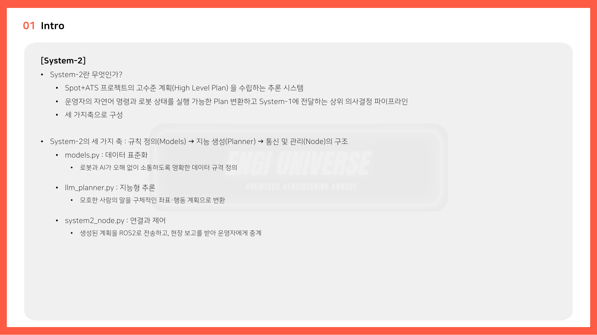
교안 4강 §01 — System-2의 3축 구조 (출처: ENGI UNIVERSE)
🛰️ 1교시. System-2 단독 검증 (공간 지능 테스트)¶
로봇(System-1) 없이 System-2만 실행해 계획 품질을 먼저 검증합니다. → "로봇 제어 문제"인지 "계획 생성 문제"인지 원인을 분리합니다.
테스트 지도 좌표계 (A/B/C/D 4구역)¶
| 구역 | x | y |
|---|---|---|
| A | −10.7 | −12.6 |
| B | +9.8 | −12.6 |
| C | −10.7 | −18.3 |
| D | +9.8 | −18.3 |
LLM은 이 좌표로 구역 중앙 좌표를 계산해 goal.x, goal.y, goal.yaw 를 채웁니다.
테스트 명령¶
명령: "A 구역으로 이동해줘"
- 핵심: LLM이 A 구역 중앙 좌표를 계산해
goal을 올바르게 채우는지 - 검증: JSON에서
task: move_to확인,params.goal.{x,y,yaw}가 A 구역 좌표로 출력 → 성공
명령: "A, C, D 구역을 순서대로 이동하면서 주변을 스캔하고, 만약 사람이 발견되면 보고하고 대기해줘."
- 핵심: 여러 단위 액션을 순서대로 생성하고, 특정 액션에 붙은 조건(사람 발견 시
report_and_wait)을 지키는지 확인
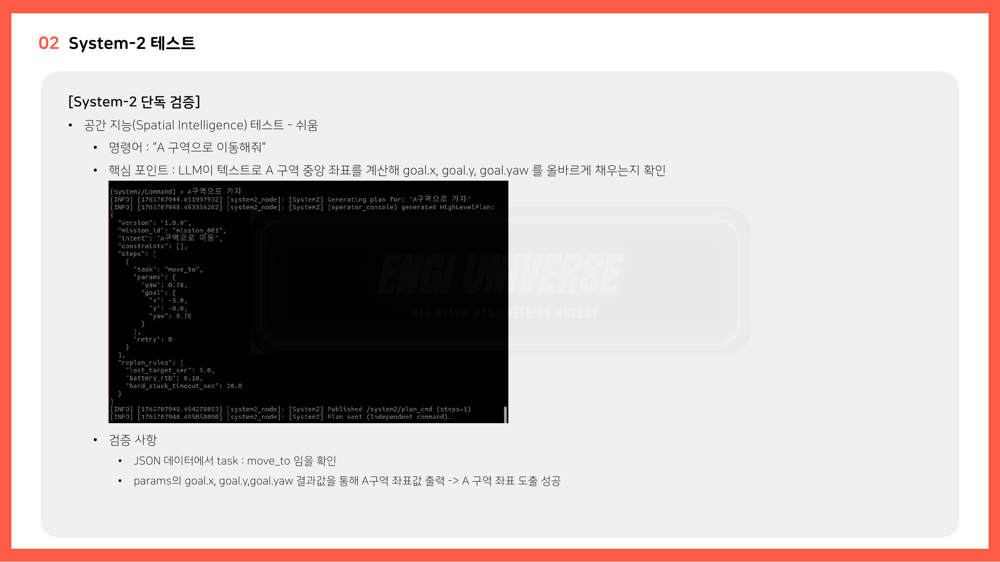
교안 5강 §02 — System-2 단독 검증(공간 지능 테스트) 콘솔 출력 (출처: ENGI UNIVERSE)
models.py — LLM과 로봇 사이의 "계약서" (4강 §02 재구성)¶
규격·범위를 벗어난 데이터는 처음부터 통과시키지 않는 안전장치입니다. task 는 5개 문자열만 허용해 LLM 환각(hallucination)을 차단합니다.
from typing import List, Dict, Optional, Literal
from pydantic import BaseModel, Field
class Step(BaseModel):
# 허용된 단위 액션 5가지만 인정 → 나머지는 에러(환각 방지)
task: Literal["move_to", "scan", "report_and_wait", "track", "return_to_home"]
params: Dict = {} # task별 데이터(좌표/각도/대상 등)에 유연 대응
retry: int = Field(0, ge=0) # 재시도 횟수는 0 이상만 허용
class ReplanRules(BaseModel):
lost_target_sec: float = 5.0 # 추적 대상 놓치면 최대 5초 재탐색 후 포기
battery_rtb: float = Field(0.18, ge=0.0, le=1.0) # 배터리 18% 이하면 복귀(RTB)
class HighLevelPlan(BaseModel):
version: str = "1.0.0" # 포맷 버전(구/신 구분)
intent: str # 사람이 읽을 수 있는 미션 의도
steps: List[Step] # 순서대로 실행할 단위 액션 시나리오
replan_rules: ReplanRules = ReplanRules()
class VisionSnapshot(BaseModel):
summary: str = "" # 카메라가 본 상황 한 줄 요약
class System1State(BaseModel):
mission_id: str
system1_state: Literal["idle", "moving", "working"]
current_task: Optional[str] = None
step_index: int = 0 # 전체 N단계 중 몇 번째 Step인지(진척도)
pose: Dict = {} # 로봇 현재 위치/자세(x, y, yaw 등)
vision_snapshot: VisionSnapshot = VisionSnapshot()
검증 사항
System-2가 모호한 자연어 명령을 구조화된 HighLevelPlan JSON으로 안정적으로 변환하는 추론 엔진임을 확인 → 이후 System-1과 연결해도 될 만큼 신뢰할 수 있는 상태임을 검증.
🤝 2교시. System-2 & System-1 연동 테스트¶
System-2가 생성한 플랜을 /system2/plan_cmd 로 발행하면 System-1이 해당 단위 액션 서버를 호출합니다. 4가지 시나리오로 통신 파이프라인과 자율 동작을 검증합니다.
Scenario A — 기초 기동 ("D 구역으로 가줘")¶
- 체크포인트: System-2가
move_to플랜 생성 후/system2/plan_cmd로 전송 → System-1이move_to액션 서버 호출 - 검증: 통신 파이프라인과 내비게이션 스택이 손실 없이 연동되는지
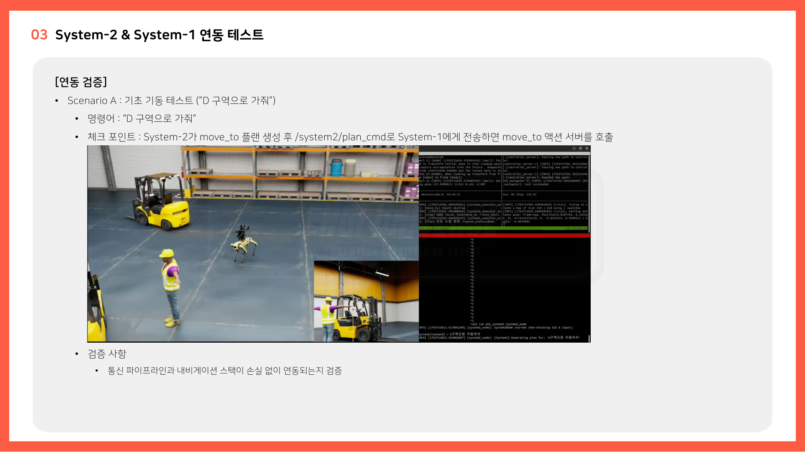
교안 5강 §03 — Scenario A: 기초 기동 테스트 (출처: ENGI UNIVERSE)
Scenario B — 인터랙티브 미션 (이동·스캔·보고)¶
명령: "지도의 중앙으로 이동해서 사람이 있는지 120도 반경 살펴보고 있다면 보고해줘"
- 별도 코딩 없이 추상 표현("중앙")을
move_to목표 좌표·방향으로 변환하는지 - 스캔 중 사람 감지 시 System-1이 System-2에게
Vision.snapshot을 전달하는지 → 이동 → 스캔 → 보고 → 운용자 응답 인터랙티브 루프
Scenario B 고도화 — 맥락을 이해하는 비전(Context-aware Vision)
- 기존: YOLO 기반 고정 클래스(Closed-set) — "사람", "소화기" 등만 인식
- 확장: Grounding Vision / VLM(Grounding DINO, YOLO-World, LLaVA) 접목 → 상태·행동까지 자연어로 질의·탐지
- 현실적 설계 — 엣지·서버 하이브리드
- 엣지(Spot 내장 컴퓨터/Jetson): 가벼운 모델로 1차 이벤트(사람·움직임)만 감지 → 짧은 클립 전송
- 서버(고성능 GPU + 대형 VLM, GPT-4o 등): 정밀 판단 후 행동 지침 회신
- → 로봇 자원(배터리·연산)을 아끼면서 고성능 연산이 가능한 지능형 보안 관제 솔루션
Scenario C — 장기 순찰 (D, C, B, A 순차 정찰)¶
명령: "D, C, B, A 구역 순서대로 이동하면서 정찰해줘."
- System-2가 긴 전체 계획(Full Plan) 생성 → System-1은 메모리(Task Queue) 에 저장 후 단위 액션에 참고
- 중간
report_and_wait도달 → 운용자 명령 하달 → System-1은 기존 계획 폐기, 재계획 저장·실행
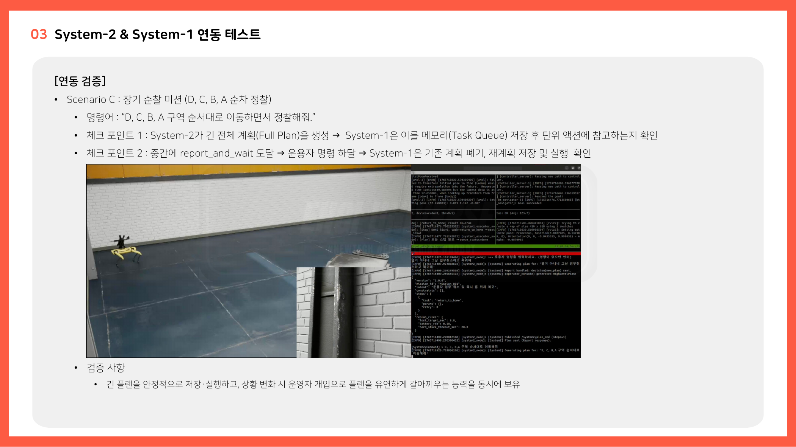
교안 5강 §03 — Scenario C: 장기 순찰 미션 (출처: ENGI UNIVERSE)
Scenario D — 객체 인식 및 동적 추적¶
명령: "주변 60도 반경을 스캔하고, 만약 트럭이 발견되면 추적해줘."
- 지정 범위(약 60도) 안에서
scantask 수행 → 타겟 클래스 감지 시 즉시 중단하고track으로 전환 - 대상이 이동해도 시선을 고정하고 일정 거리를 유지하는 Visual Servoing 동작 유지
llm_planner.py — 자연어를 검증된 계획으로 (4강 §03 재구성)¶
from langchain_openai import ChatOpenAI
from langchain.output_parsers import PydanticOutputParser
from langchain.prompts import ChatPromptTemplate
from models import HighLevelPlan
# temperature=0.1 → 창의성을 거의 줄여 경로 흔들림("어제 오른쪽, 오늘 왼쪽") 방지
llm = ChatOpenAI(model="gpt-4o", temperature=0.1)
parser = PydanticOutputParser(pydantic_object=HighLevelPlan)
# 시스템 프롬프트 4단계 구조:
# ① 행동 반경 제한(Action) ② 텍스트 기반 공간 추론(Map)
# ③ 상황별 대응 로직(Logic) ④ 출력 형식 강제(Format)
system_template = """너는 Spot+ATS 보안 로봇의 작전 플래너(System-2)다.
[① 사용 가능한 단위 액션] move_to, scan, report_and_wait, track, return_to_home
[② 지도 좌표] A:(-10.7,-12.6) B:(9.8,-12.6) C:(-10.7,-18.3) D:(9.8,-18.3)
구역 중앙 좌표를 계산해 goal.x, goal.y, goal.yaw 로 변환한다.
[③ 상황 로직] 위험/사람 감지 등 상황을 고려해 플랜을 수정·최적화한다.
[④ 출력] 아래 JSON 스키마만 출력한다(부가 설명 금지).
{format_instructions}"""
def state_to_text(state: dict) -> str:
# 신호 대 잡음비(SNR) 개선: 필요한 값만 소수점 2자리로 요약
p = state.get("pose", {})
return f"pos=({p.get('x',0):.2f},{p.get('y',0):.2f}) battery={state.get('battery',1.0):.2f}"
def build_plan(user_cmd: str, state: dict) -> HighLevelPlan:
prompt = ChatPromptTemplate.from_messages(
[("system", system_template), ("human", "{state}\n명령: {cmd}")]
).partial(format_instructions=parser.get_format_instructions())
chain = prompt | llm | parser # '모호한 자연어' → '검증된 파이썬 객체'
return chain.invoke({"state": state_to_text(state), "cmd": user_cmd})
system2_node.py — ROS 2 런타임 통합 (4강 §04 재구성)¶
import rclpy, json, threading
from rclpy.node import Node
from std_msgs.msg import String
from llm_planner import build_plan
class System2Node(Node):
def __init__(self):
super().__init__('system2_node')
self.latest_state = {}
# System-1(로봇) 상태 수신 → context-aware 판단에 캐싱
self.create_subscription(String, '/ats_state', self.on_state, 10)
# HighLevelPlan을 System-1 Executor로 전달하는 메인 채널
self.plan_pub = self.create_publisher(String, '/system2/plan_cmd', 10)
# report_and_wait 상태일 때 운영자 지시를 즉시 전달하는 별도 채널
self.decision_pub = self.create_publisher(String, '/system2/decision', 10)
# spin 블로킹 방지: 운영자 입력은 별도 데몬 스레드(비동기)
threading.Thread(target=self._operator_input_loop, daemon=True).start()
def on_state(self, msg):
self.latest_state = json.loads(msg.data)
def _operator_input_loop(self):
while True:
cmd = input('운영자 명령> ') # Human-in-the-loop
plan = build_plan(cmd, self.latest_state) # 즉시 (재)계획
out = String(); out.data = plan.model_dump_json()
self.plan_pub.publish(out) # System-1으로 하달
def main():
rclpy.init(); rclpy.spin(System2Node())
강건성을 높이는 방어적 프로그래밍
normalize_plan_for_schema(): LLM 출력이 스키마와 살짝 다를 때(좌표가 평평한 형태로 올 때 등) 스키마 규격으로 강제 변환 → 무결성 보장- Multi-threading: ROS 콜백(spin)과 운영자 입력 루프 분리 → 응답성 유지
- Interactive Callback:
report_context_callback()으로 운영자 실시간 협업(Teaming)
🚀 3교시. 고도화 방향 (최신 Physical AI 연구 동향)¶
Physical AI / VLA와의 연결¶
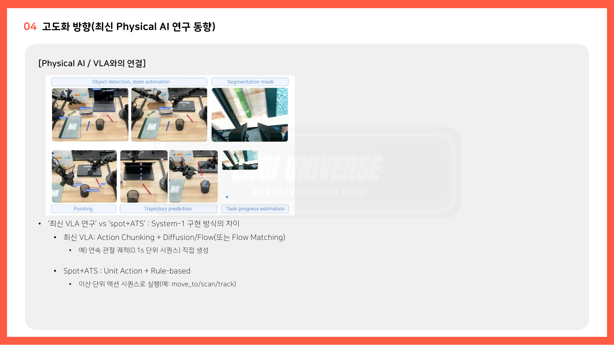
교안 5강 §04 — 최신 VLA와 Spot+ATS의 System-1 구현 방식 비교 (출처: ENGI UNIVERSE)
| 구분 | 최신 VLA | Spot+ATS (본 프로젝트) |
|---|---|---|
| 아키텍처 | 초기 End-to-end → 모듈러 | 모듈러 (System-2 + System-1) |
| System-1 구현 | Action Chunking + Diffusion/Flow Matching (연속 관절 궤적 0.1s 단위) | Unit Action + Rule-based (이산 단위 액션: move_to/scan/track …) |
왜 Unit Action + Rule-based 인가?
- 다양한 폼팩터에 즉각 대응 — Diffusion 정책은 로봇별 관절/기구학이 달라 이식·재학습 부담이 큼. ROS2 표준 인터페이스 기반이라 System-1만 로봇별 단위 액션으로 교체/추가(Plug & Play).
- 데이터·인프라 장벽 회피 — 최신 VLA는 대규모 시연/합성 데이터와 학습 인프라 요구. 단위 액션은 기능을 작게 쪼개 라이브러리화하고, LLM은 오케스트레이션(배치·순서·조건) 에 집중 → 적은 리소스로 구현.
우리 프로젝트의 확장안¶
- System-2를 관제 서버로 만들어 Spot/드론/UGV를 동시 스케줄링(누가·언제·어디를)
- 추가 모듈: Robot Registry(능력/상태) + Task Allocator(임무 분배) + Conflict Resolver(충돌/우선순위)
- 결과: "A는 Spot 순찰, B는 드론 확인" 같은 팀 전술 플랜 자동 생성·조정
- 단위 액션은 유지하되 실행부 일부(수학적 규칙)를 학습 정책으로 교체(상위는 안전/제약 관리)
- 후보 1) DRL 자율주행 정책 — Nav2 로컬 플래너 대체/보완 → Social Navigation(사람 흐름 예측·좁은 통로 양보)
- 후보 2) End-to-End Visual Servoing 정책 — 폐색(Occlusion) 상황에서도 예측 기반 추적 유지
결론
System-2는 "전술·협업·재계획"을 담당하고, System-1은 "안전하게 실행"하면서 일부를 Policy로 고도화 → 확장성(멀티로봇) + 유연성(학습형 제어) 를 동시에 얻는 다음 단계 로드맵.
🧩 Wrap-up — 한 학기 풀스택 정리¶
이번 강의 커리큘럼은 시뮬레이션–미들웨어–자율주행–AI 추론까지 현대 로봇 소프트웨어 풀스택을 하나의 파이프라인으로 연결했습니다.
- Isaac Sim 기초 및 환경 구축 — URDF 임포트 → 물리/센서 설정 → 고정밀 가상 검증 환경
- Isaac Sim ↔ ROS 2 연동 — ROS 2 Bridge로 센서 송신 + 제어 명령 수신(양방향 파이프라인)
- SLAM 및 자율주행(Navigation) — SLAM으로 지도 생성 → Nav2로 위치추정·경로계획·장애물 회피
- Physical AI (LLM 기반 고수준 제어) — System-2(자연어→Plan) + System-1(Plan→실행) 결합으로 텍스트 미션 수행·검증
✅ 체크포인트¶
- System-2 단독으로 자연어 명령이
HighLevelPlanJSON으로 변환되는가 - Scenario A(기초 기동)에서
/system2/plan_cmd→move_to연동이 되는가 - Scenario C에서
report_and_wait→ 운영자 재계획이 반영되는가 - Scenario D에서
scan→track(Visual Servoing) 전환이 되는가
📊 평가 루브릭 (기말 프로젝트)¶
| 항목 | 비중 | 평가 기준 |
|---|---|---|
| 계획 생성 정확성 | 30% | 자연어 → HighLevelPlan(좌표·조건) 변환의 정확성 |
| System-1/2 연동 | 25% | /system2/plan_cmd 파이프라인이 손실 없이 동작 |
| 시나리오 수행 | 20% | A~D 시나리오(기동·인터랙티브·순찰·추적) 시연 |
| 재계획·협업 | 15% | report_and_wait + 운영자 개입 재계획 동작 |
| 고도화 제안·발표 | 10% | VLA·멀티에이전트·Policy Head 확장안의 타당성 |
🖼️ 원본 강의 슬라이드¶
Physical AI 5강 — System-2 테스트 및 검증 (전체 19매)
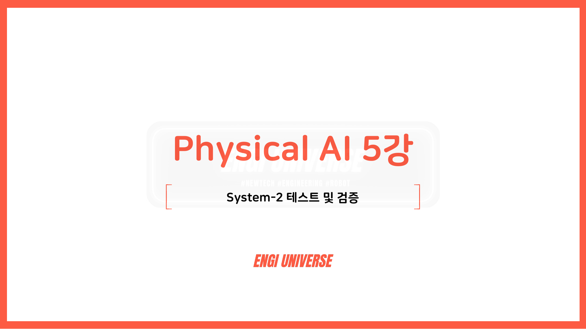
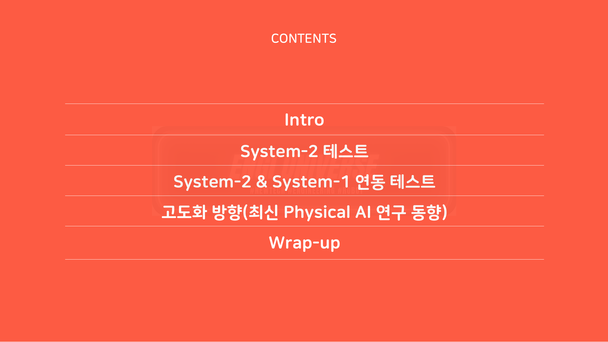
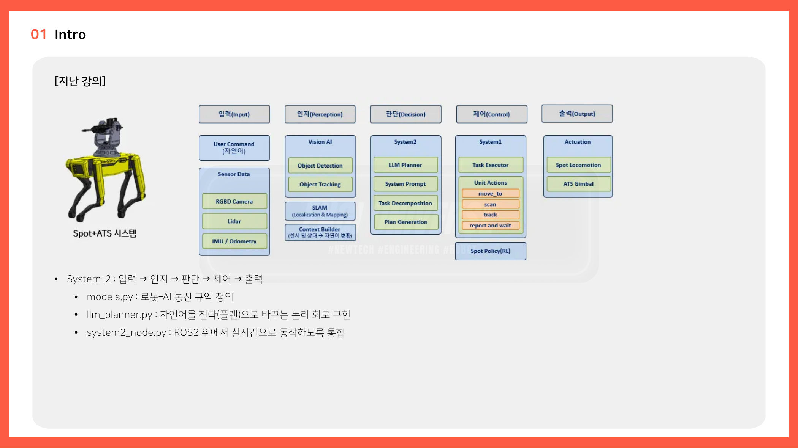
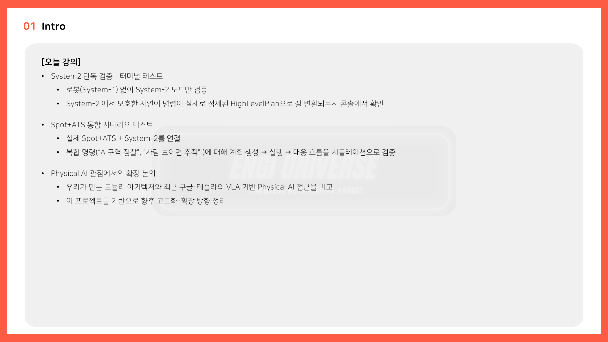
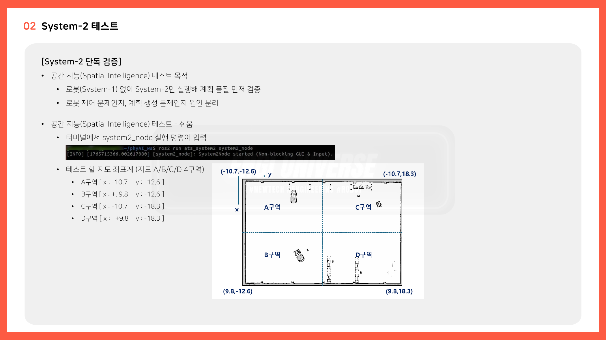
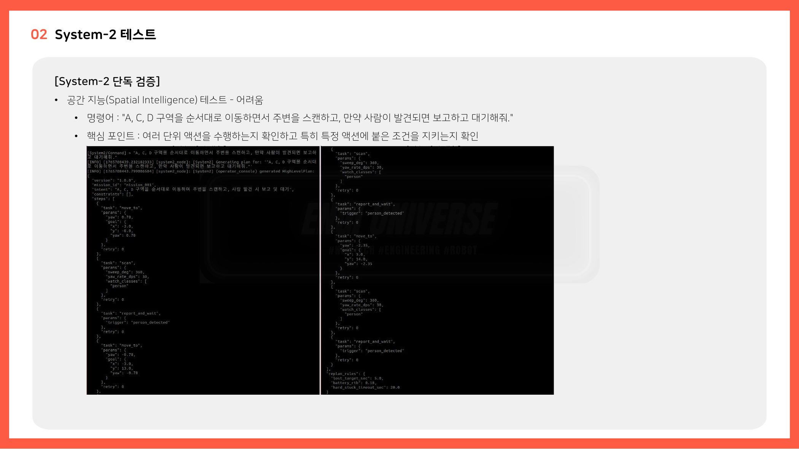
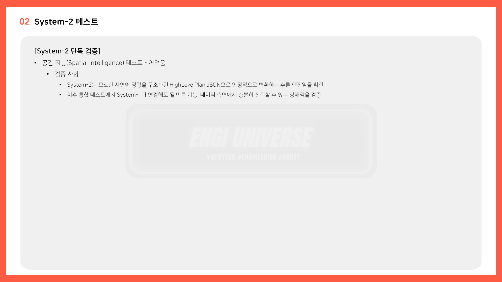
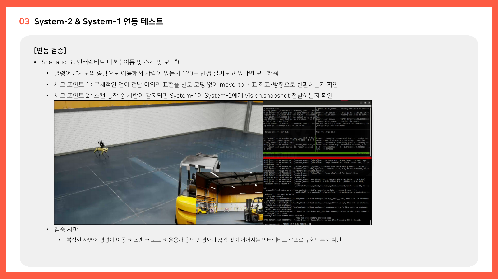
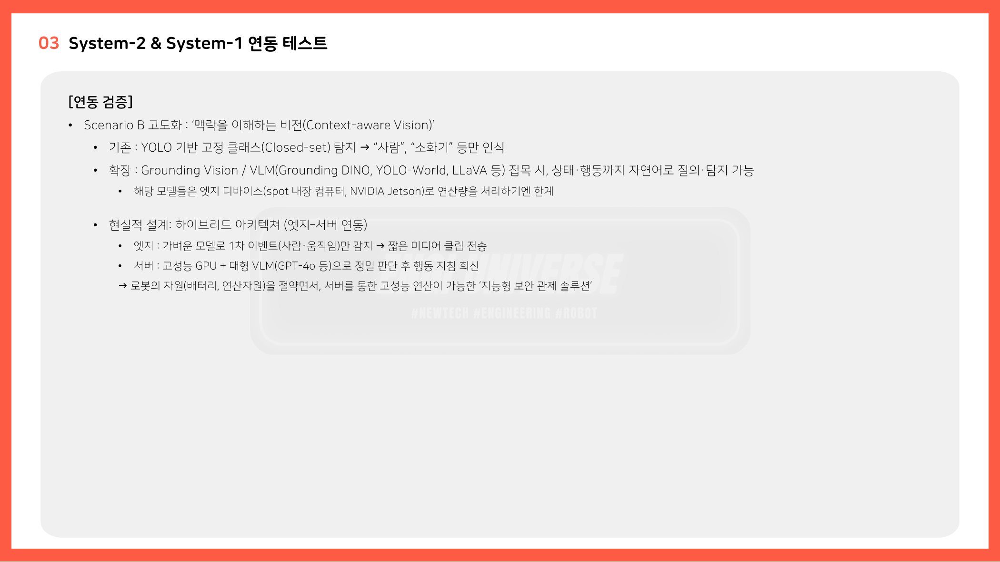
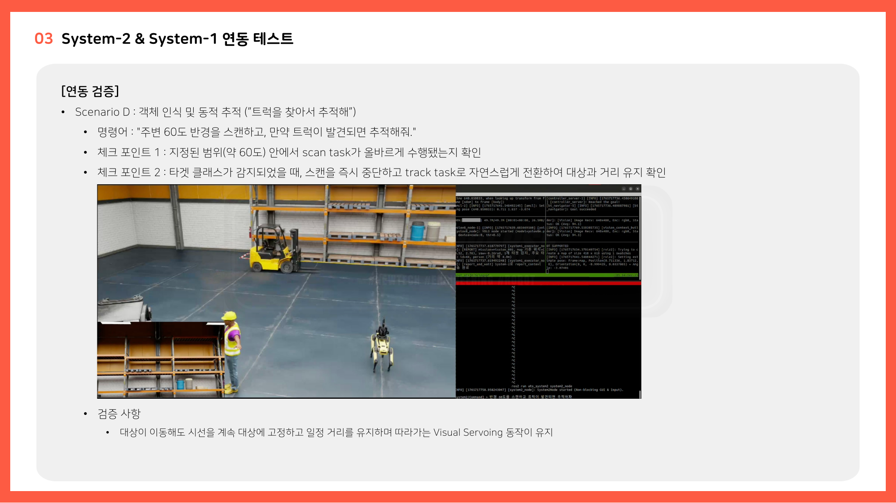
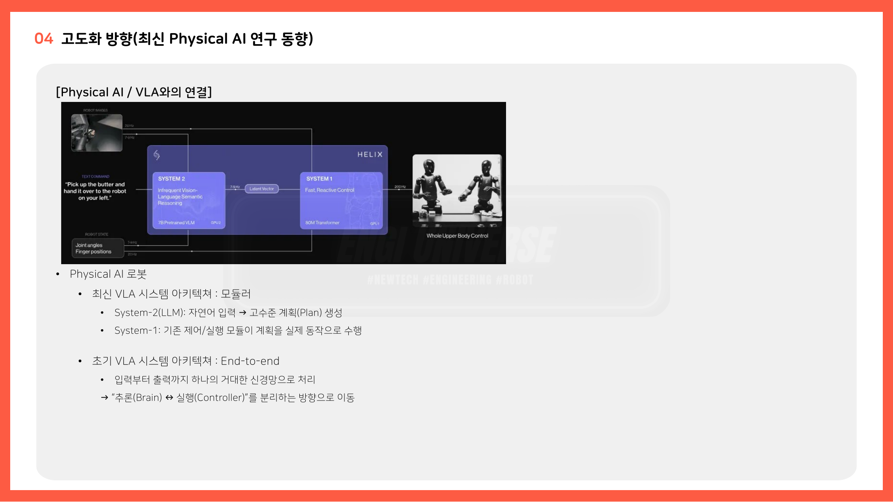
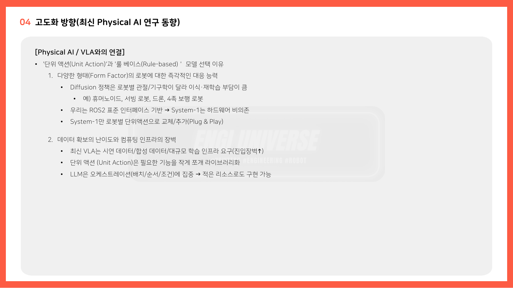
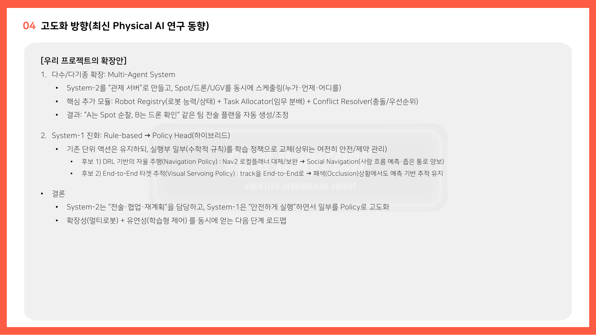
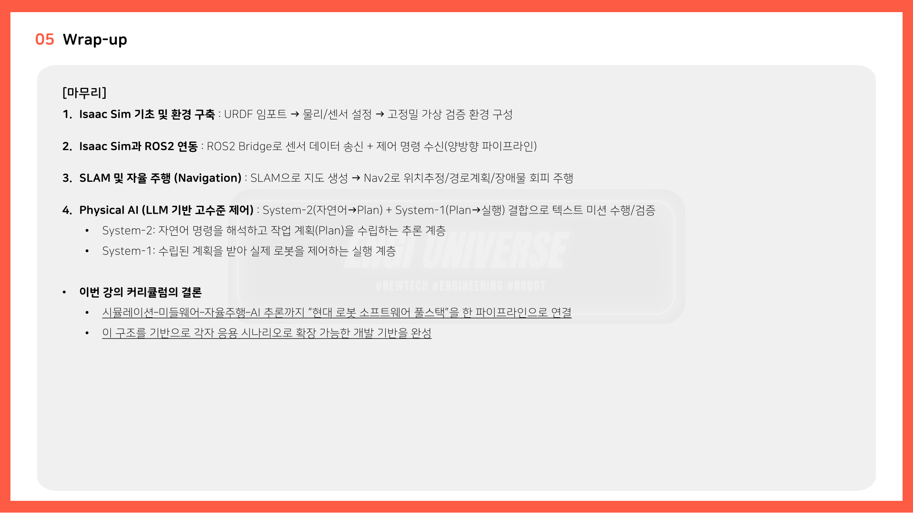
Physical AI 4강 — System-2 LLM Planner 설계 (핵심)
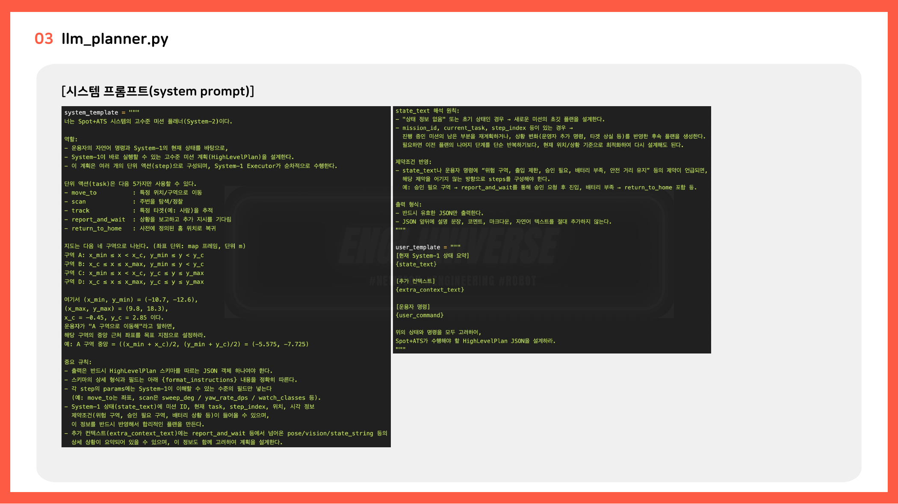
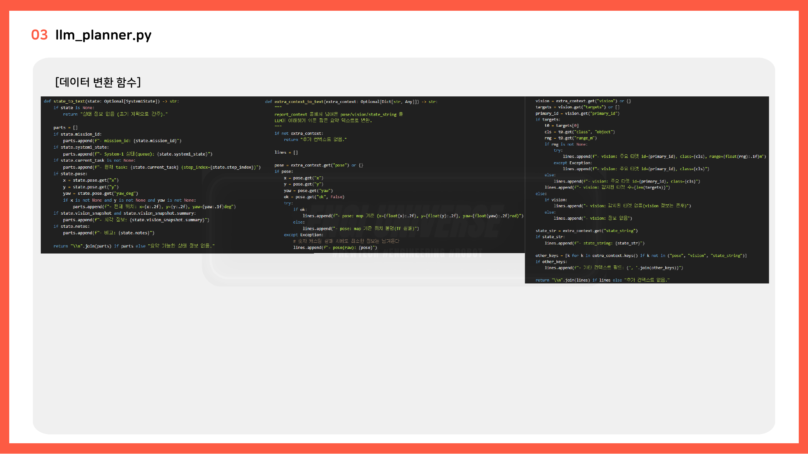
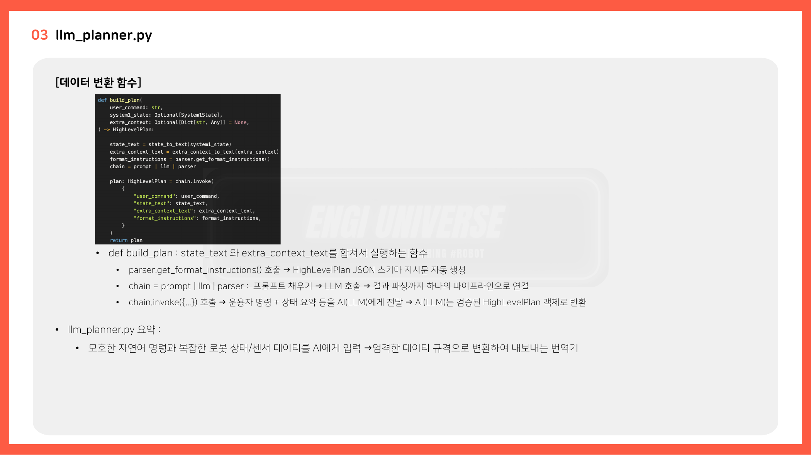
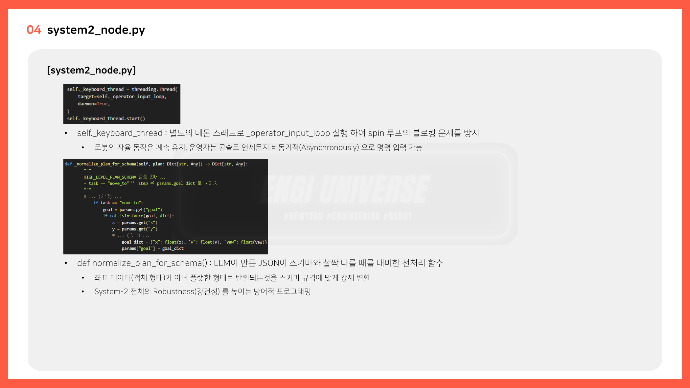
🔗 출처 및 참고자료¶
- 교안: 『Physical AI』 4강·5강 (제작: ENGI UNIVERSE) — 강의 슬라이드 원본
- Spot+ATS 프로젝트 사용 매뉴얼 (Rev 1.4) — 로봇 플랫폼·운용 시나리오
- LangChain — https://python.langchain.com
- Pydantic — https://docs.pydantic.dev
- Grounding DINO — https://github.com/IDEA-Research/GroundingDINO · YOLO-World — https://github.com/AILab-CVC/YOLO-World